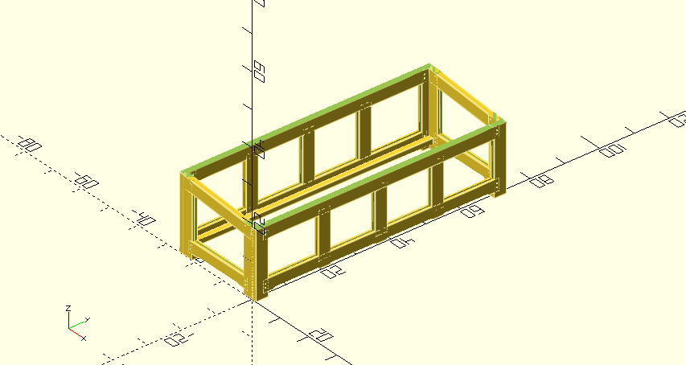
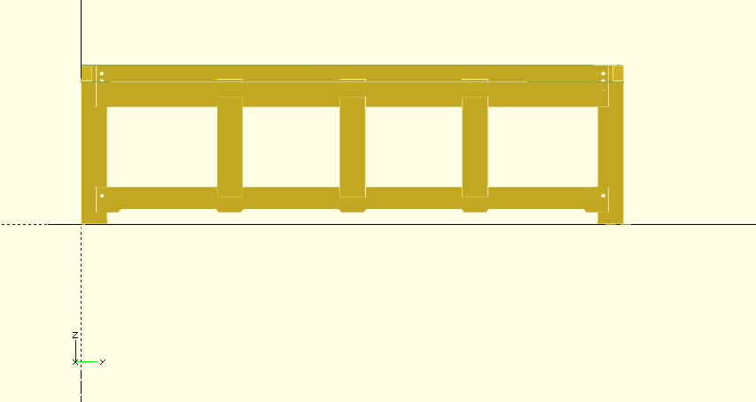
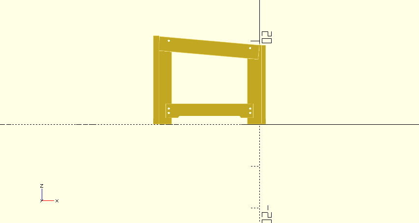
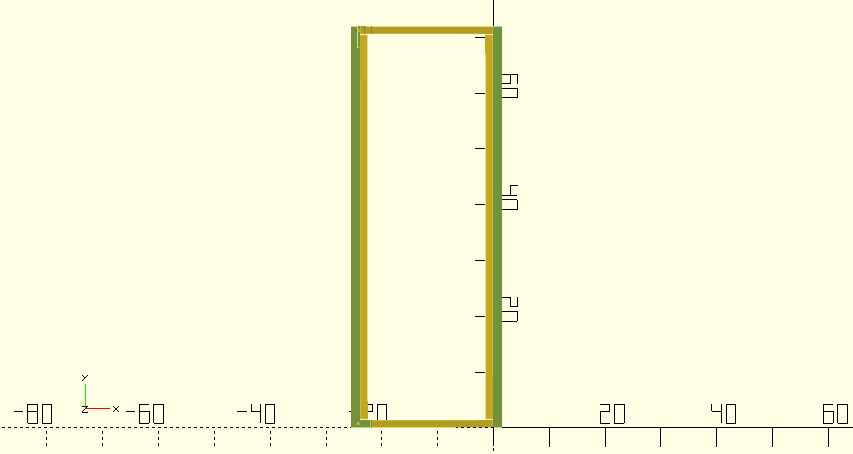
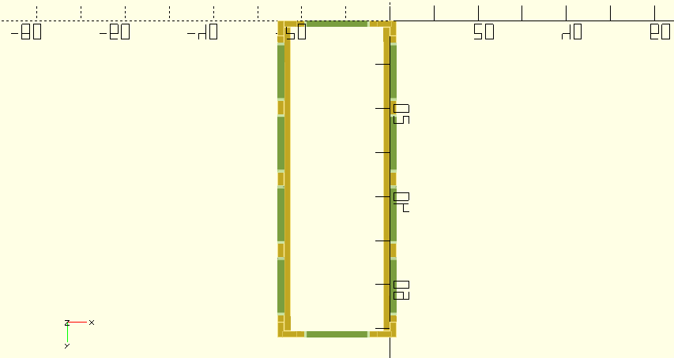

Free up garage space by storing stuff outside.
Create 2 boxes out of cedar. a 2’x6’ and a 3’x6’. Do the 2’x6’ first. sloped lid.





ECHO: 85 - top angle
Front:
ECHO: “face leg left 2x4 height:”, 19
ECHO: “top rail notch Z”, 16
ECHO: “top rail notch height”, 2.5
ECHO: “bottom rail notch Z”, 2
ECHO: “bottom rail notch height”, 2.5
ECHO: “face leg left 2x4 height:”, 19
ECHO: “top rail notch Z”, 16
ECHO: “top rail notch height”, 2.5 ECHO: “bottom rail notch Z”, 2
ECHO: “bottom rail notch height”, 2.5
ECHO: “section length:”, 16.25
Back:
ECHO: “face leg left 2x4 height:”, 21.25
ECHO: “top rail notch Z”, 18.25
ECHO: “top rail notch height”, 2.5
ECHO: “bottom rail notch Z”, 2
ECHO: “bottom rail notch height”, 2.5
ECHO: “face leg left 2x4 height:”, 21.25
ECHO: “top rail notch Z”, 18.25
ECHO: “top rail notch height”, 2.5
ECHO: “bottom rail notch Z”, 2
ECHO: “bottom rail notch height”, 2.5
ECHO: “section length:”, 16.25
S4S Cedar 2x4 x 8’ =
faces : 7 +
sides : 2 +
top : 3 = 12
Cedar 1x6-8’ · Select Tight Knot · S1S2E · Green =
faces: 8
sides: 3
total: 11
Cedar Decking · 5/4x6-8’ · Select Tight Knot · KD Radius Edge =
floor: 4 top: 4
total: 8